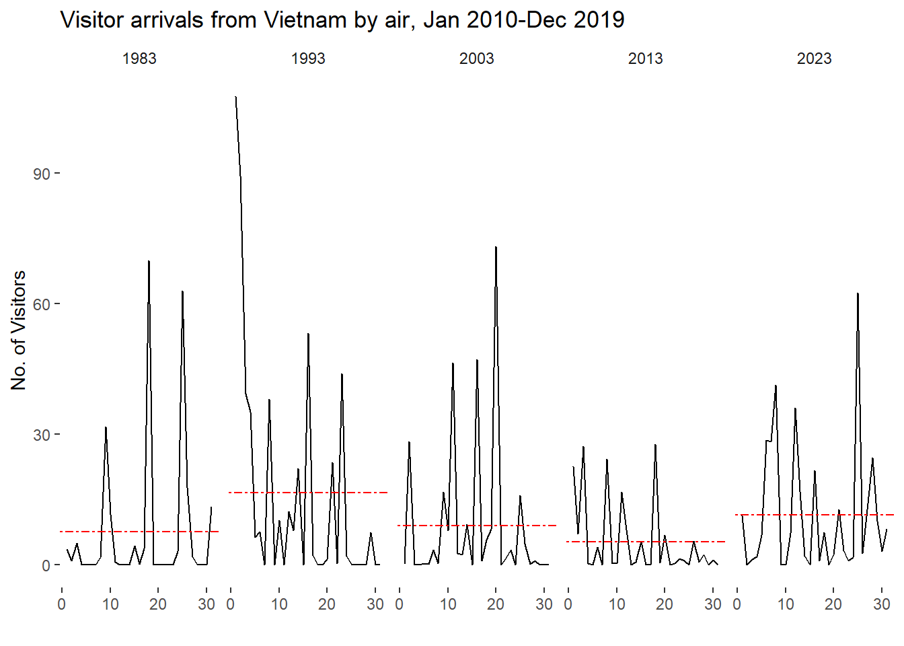

In this take home exercise, the rainfall data provided by Singapore Queen Street station will be re-designed to enhance the user experience in data discovery and/or visual story-telling.
In this section we are going to import five data sets into R environment which are daily rainfall data in December of year 1983, 1993, 2003, 2013, 2023.
Since we do not have much columns and rows in our data sets, we can just examine them by just view() them. The result shows there is no missing value and duplicates.
Since the background knowledge about the data sets such as station and month are already given, those columns will be remove. Also, multiple data sets is not good for our further analyses. Therefore, in this section, the redundant columns will be remove and all the data sets will be merged into one. I also create a long data set called rainfall_long, that will be helpful when we create graphs.
rain1983$rainfall_1983<-rain1983$`Daily Rainfall Total (mm)`rain1993$rainfall_1993<-rain1993$`Daily Rainfall Total (mm)`rain2003$rainfall_2003<-rain2003$`Daily Rainfall Total (mm)`rain2013$rainfall_2013<-rain2013$`Daily Rainfall Total (mm)`rain2023$rainfall_2023<-rain2023$`Daily Rainfall Total (mm)`rain1983 <- rain1983 %>%select(Day,rainfall_1983)rain1993 <- rain1993 %>%select(Day,rainfall_1993)rain2003 <- rain2003 %>%select(Day,rainfall_2003)rain2013 <- rain2013 %>%select(Day,rainfall_2013)rain2023 <- rain2023 %>%select(Day,rainfall_2023)rainfall <- rain1983 %>%inner_join(rain1993, by ="Day") %>%inner_join(rain2003, by ="Day") %>%inner_join(rain2013, by ="Day") %>%inner_join(rain2023, by ="Day")rainfall
5.1 Compare Rainfall Day by Day Among Different Years
By using the long version of the data set, we are able to plot all rainfall information into one graph by different days. Then we can easily compare each days’ rainfall among different year by simply click the bar under the graph.
5.2 Compare the overall Rainfall trends Among Different Years
In this section, an overall comparison will be visualized to show the user which year has the most rainfall in December. For the bar plot, we need to calculate the average rainfall information (Avg.data) for each year in order to show a more direct information to the user.
In this section cycle plot will be create to show the time-series patterns and trend of rainfall data. In this way user can see the average rainfall of each year and the daily rainfall information in one graph.
ggplot() +geom_line(data=rainfall_long,aes(x=Day, y=Rainfall, group=ActualYear), colour="black") +geom_hline(aes(yintercept=avgvalue), data=Avg.data, linetype=6, colour="red", size=0.5) +facet_grid(~ActualYear) +labs(axis.text.x =element_blank(),title ="Visitor arrivals from Vietnam by air, Jan 2010-Dec 2019") +xlab("") +ylab("No. of Visitors") +theme_tufte(base_family ="Helvetica")

Summury
In this exercise, the December rainfall data of year 1983, 1993, 2003, 2013 and 2023 were visualized and compared. It is clear that 1993 has the most rainfall and 2023 has the second most. However, there is no clear evidence to show any pattern about how the rainfall is changing during time.